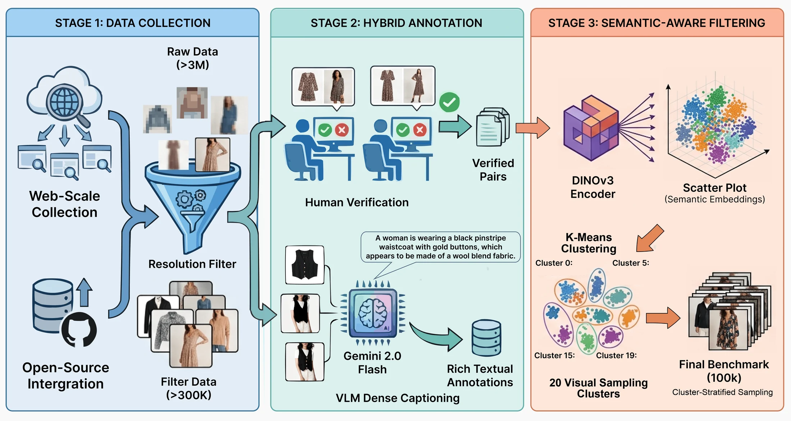
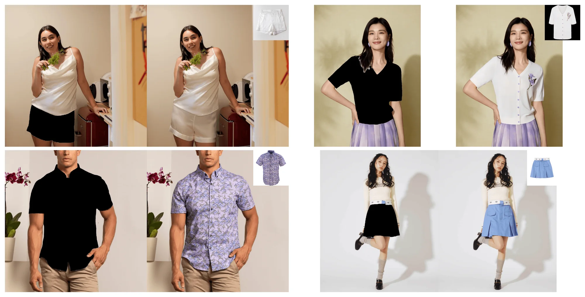
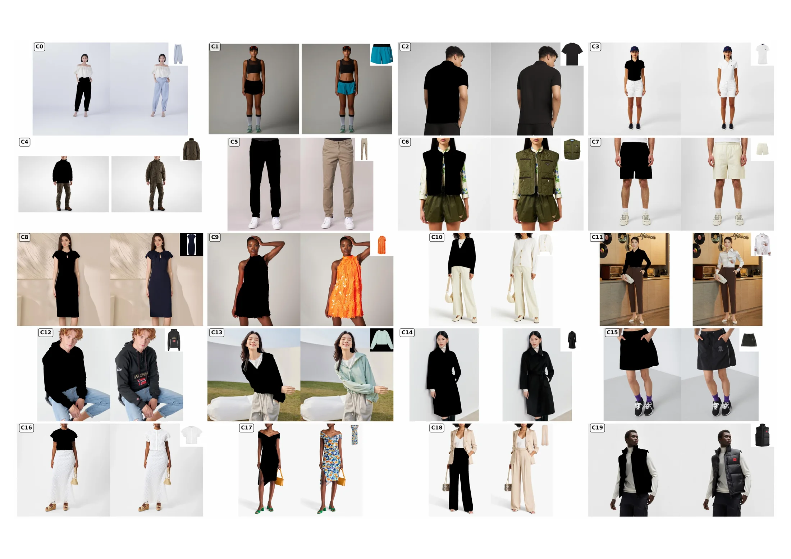
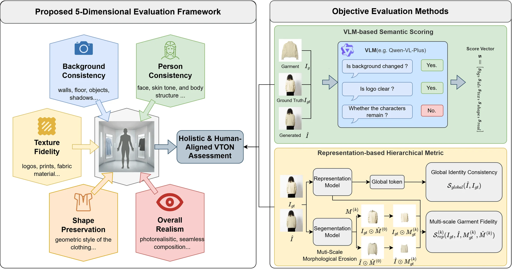
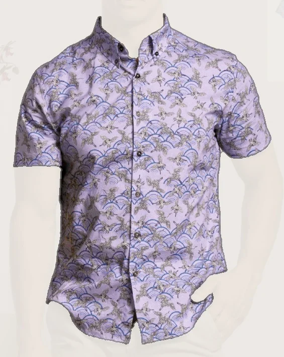
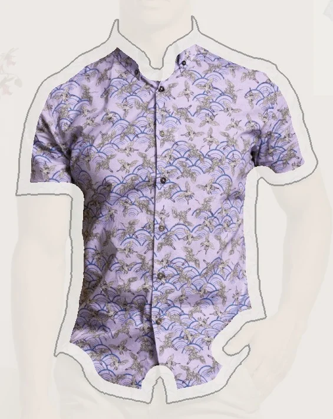
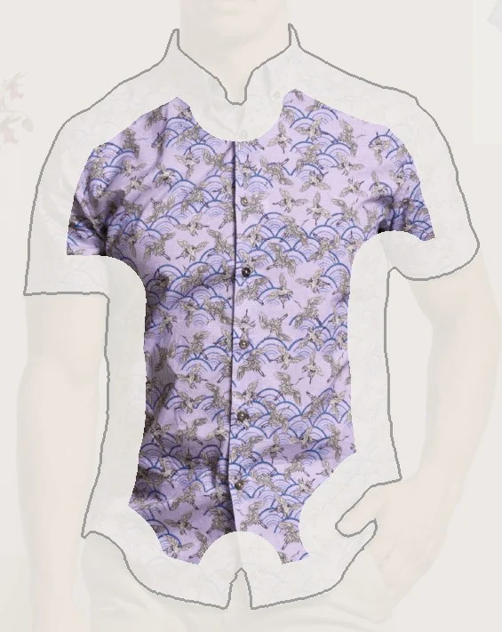
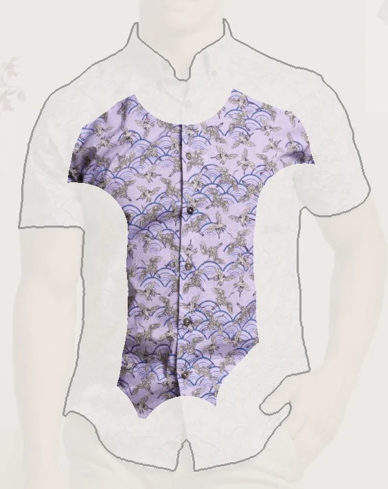

A Large-Scale High-Resolution Benchmark for Controllable Virtual Try-On Evaluation
*Equal contribution†Project lead & corresponding author
NeurIPS 2026 poster session · Tue, Dec 8, 2026 · 17:00–20:00 AEDT · Hall 1-4
Pick an example: masked person and target garment, then the outputs of nine try-on systems. Examples 1–2 appear in the main paper; 3–12 in the appendix.
Recent advances in diffusion models have significantly elevated the visual fidelity of Virtual Try-On (VTON) systems, yet reliable evaluation remains a persistent bottleneck. Traditional metrics struggle to quantify fine-grained texture details and semantic consistency, while existing datasets fail to meet commercial standards in scale and diversity. We present OpenVTON-Bench, a large-scale benchmark comprising approximately 100K high-resolution image pairs (up to \(1536\times1536\)). The dataset combines Gemini-powered dense captioning with stratified sampling across 20 visual clusters obtained by DINOv3 K-Means. To support reliable evaluation, we propose a multi-modal protocol that measures VTON quality along five interpretable dimensions: background consistency, identity fidelity, texture fidelity, shape plausibility, and overall realism. The protocol integrates VLM-based semantic reasoning with a novel Multi-Scale Representation Metric based on SAM3 segmentation and morphological erosion, enabling the separation of boundary alignment errors from internal texture artifacts. Under the specified evaluation rubric, our representation metric shows strong agreement with human model rankings (Kendall's \(\tau\) of 0.833 vs. 0.611 for SSIM).
Legacy try-on data is studio-centric — clean backdrops, standardized poses, restricted resolutions — and recent higher-resolution efforts remain small or closed. OpenVTON-Bench offers ~100K open, high-resolution pairs from real e-commerce and social-media scenes.
Filled = open source, hollow = closed. Bars span reported resolution ranges. VTBench (2,933 pairs, closed) reports no resolution.

(1) Collection — >3M raw samples from public e-commerce sources and IGPair (IMAGDressing-v1), screened with aesthetic scoring and face detection; a resolution filter (both sides ≥ 1024 px, long side ≤ 1536 px) leaves ~300K. (2) Hybrid annotation — annotators verify every candidate pair; Gemini 2.0 Flash writes coarse-to-fine dense captions (3M+ words). (3) Semantic-aware filtering — DINOv3 ViT-H+ embeddings, K-Means (K = 20) and cluster-stratified sampling yield the final 99,925 pairs.

Each sample: cloth-agnostic person, ground truth and target garment (inset). Faces are generatively anonymized.

Nineteen clusters hold 5,012–5,088 pairs; C13 keeps all 3,340 available. The released category field holds 14 caption-derived labels, separate from these clusters.
FID, SSIM and LPIPS are semantically blind: an image can score well while distorting a logo or a body shape. We decompose quality into five interpretable dimensions and measure them with two complementary tracks.

Qwen-VL-Plus reads the triplet of garment \(I_g\), ground truth \(I_{gt}\) and generated image \(\hat I\) with a task rubric \(\mathcal{T}\), and scores each dimension on a 1–5 scale:
This captures semantic attributes — logo clarity, garment-category correctness — that CNN-based metrics cannot see.
SAM3 garment masks are progressively eroded; frozen DINOv3 features \(\Phi\) compare the same nested regions of \(\hat I\) and \(I_{gt}\):
Small \(k\) keeps the garment boundary; large \(k\) isolates interior fabric. With the global score \(S_{\text{global}}=\cos(\Phi(\hat I),\Phi(I_{gt}))\) this yields \(\bar S\).




Full mask — the score reflects both boundary alignment and texture.
Illustration on an OpenVTON-Bench ground-truth image; erosion is enlarged for visibility (the paper uses a 3×3 structuring element, k = 0…3). PSNR, SSIM, LPIPS and FID are also reported as auxiliary references.
Raters scored randomly sampled triplets on the same five dimensions (5-point scale) without seeing method identities or VLM outputs, scores or rationales. After task-level outlier removal and rater mean-centering, agreement ranges from α = 0.468 (background) to 0.835 (realism). VLM and human model means differ by MAE 0.299 on the 1–5 scale, with 40 of 45 model-by-dimension comparisons within 0.5; UNO accounts for four of the five larger gaps. The study measures model-ranking agreement under the specified rubric, not unconstrained human preference.
Nine representative systems — diffusion-based and editing-based, open and commercial — evaluated on OpenVTON-Bench.
Texture–realism gap. FLUX.1-Kontext-dev reaches VLM realism 4.137 but texture only 3.574: large-scale pre-training yields photorealism, not faithful garment patterns.
Erosion separates boundary from interior. OOTD drops from 0.797 to 0.669 as masks erode; YingHui still holds 0.823 at the deepest level.
Closer to human rankings. \(\bar S\) reaches Kendall τ = 0.833 and Spearman ρ = 0.933 with human model rankings, vs. 0.611 / 0.767 for SSIM.
Bold: best, underline: second best, per column. Human columns in grey.
VLM scores. Realism exceeds texture by 0.49–0.56 for OOTD, UNO, EasyControl and FLUX.1-Kontext-dev, vs. 0.37–0.40 for the other five.
\(S_{\text{rep}}^{(k)}\) as masks erode. FLUX.2-dev outperforms FLUX.1-Kontext-dev at every level (\(\bar S_{rep}\) 0.841 vs. 0.754).
\(S_{\text{global}}\): holistic consistency; \(S_{\text{rep}}^{(k)}\): garment-level similarity under increasing erosion (k = 0 → 3). High global scores do not guarantee local garment fidelity.
Qwen-Editor leads PSNR/SSIM — visual inspection suggests it often minimizes pixel error by smoothing textures — while YingHui has the best FID.
Correlations between model-level metric and human scores (9 models, shared rubric); lower-is-better metrics are negated. ▲ best per column.
@inproceedings{li2026openvtonbench,
title = {OpenVTON-Bench: A Large-Scale High-Resolution Benchmark for
Controllable Virtual Try-On Evaluation},
author = {Li, Jin and Chen, Tao and Wen, Kai and Yin, Siqi and
Jiang, Shuai and Wang, Weijie and Luo, Jingwen and Wu, Chenhui},
booktitle = {Advances in Neural Information Processing Systems (NeurIPS),
Track on Evaluations and Datasets},
year = {2026},
url = {https://openreview.net/forum?id=hkbyKxmccF}
}